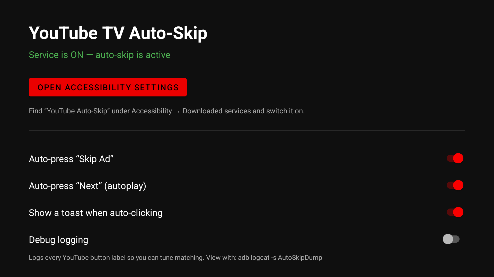

Projects
-
Verse & Advocate
LiveA Bible verse finder for arguments. Describe your point in plain English and it ranks the verses that best support it. Everything runs in the browser — the full text of three translations is bundled and searched locally in a few milliseconds. No backend, no API keys, no tracking.
-
Home Schematic Designer
LiveA canvas for drawing home A/V and network wiring. Devices carry typed ports — HDMI, XLR, RJ45, coax, optical, RCA, TRS, speaker wire, IEC and NEMA power — and cables route orthogonally between them. Import a photo of a device, place its ports, and save it as a reusable part.
-
Savannah Permit Leads
ToolPulls the City of Savannah's daily building-inspection list and turns it into contractor lead data. It calls the same public JSON API the eTRAC permit portal uses — no browser automation — then enriches each permit with architect, owner, and general-contractor contacts via a headless OAuth PKCE login. Flask UI for browsing, CSV for everything else.
-
Bottom of the Sea
LiveAn arcade dive to the Titanic wreck at 3,800 metres. Steer a submarine down through fish, sea cucumbers and starfish on three lives; depth is your score. One HTML file, canvas rendering, no dependencies.
-

The service installs and runs — but YouTube TV exposes nothing for it to act on. YouTube TV Auto-Skip
Case studyAn Android TV accessibility service built to auto-press "Skip Ad" and autoplay "Next" in the YouTube app. The full pipeline shipped — signed release APK, GitHub Actions build-and-release, installed and running on a Google TV. Then the wall: YouTube TV renders to an opaque GPU surface that exposes no accessibility nodes, so there are no buttons for the service to find or click. A clean write-up of a real platform limit — the open-source SmartTube client is the workable path.
-
Hi-Fi Leads
LiveScores audiophile sales leads by buying intent. Feed it a CSV of Facebook lead-form exports, paste posts you're browsing, or pull straight from Reddit's public API, and it ranks each person by how likely they are to buy high-end gear — Wilson Audio, Sonus Faber, McIntosh, Audio Research, Sonos, Control4 — using an editable brand checklist. Transparent regex scoring with a Hot/Warm/Cold verdict and a scored-CSV export.
Open app Live demo · free tier, first load ~30sWaking the live demo… first load can take ~30 s on the free tier.
Résumé
Résumé available on request — get in touch.